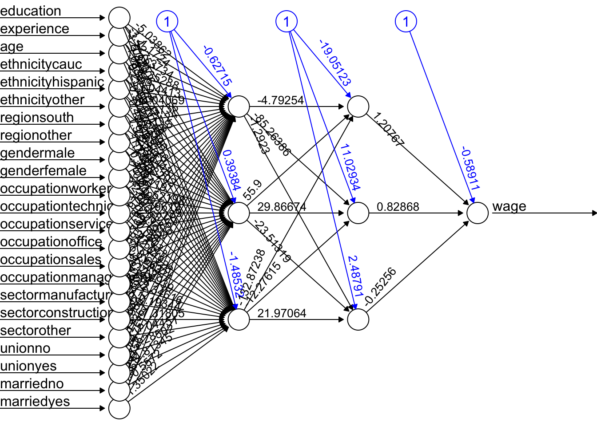
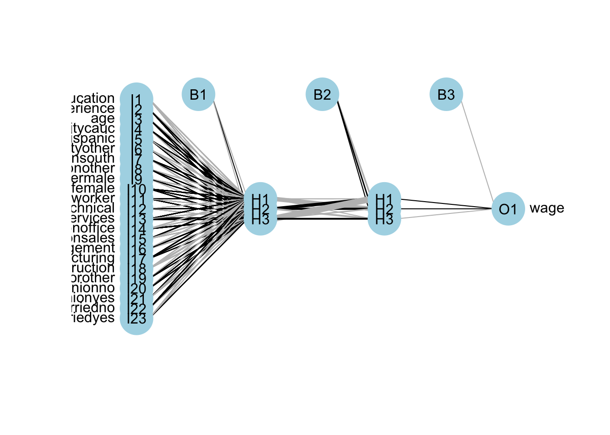
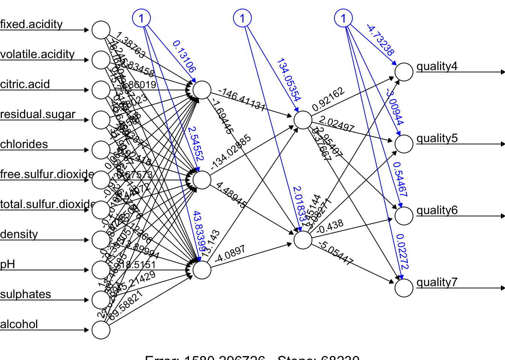

Chapter 26 Deep Learning
Simply, a Deep Neural Network (DNN), or Deep Learning, is an artificial neural network that has two or more hidden layers. Even greater flexibility is achieved via composition of activation functions:
\[ y \approx \alpha+\sum_{m=1}^M \beta_m f\left(\alpha_m^{(1)}+\underbrace{\sum_{p=1}^P f\left(\alpha_p^{(2)}+\textbf{X} \delta_p^{(2)}\right)}_{\text {it replaces } \textbf{X}} \delta_m^{(1)}\right) \]
Before having an application, we should note the number of available packages that offer ANN implementations in R and with Python. For example, CRAN hosts more than 80 packages related to neural network modeling. Above, we just saw one example with neuralnet. The work by Mahdi et al, 2021 surveys and ranks these packages for their accuracy, reliability, and ease-of-use.
mse.test <- c()
for(i in 1:10){
set.seed(i+1)
trainid <- unique(sample(nrow(ddf), nrow(ddf), replace = TRUE))
train <- ddf[trainid,]
test <- ddf[-trainid,]
# Models
fit.nn22 <- neuralnet(frmnn, data = train, hidden = c(3,3), threshold = 0.05)
mse.test[i] <- mean((test$wage - predict(fit.nn22, test))^2)
}
mean(mse.test)## [1] 1.211114The overfitting gets worse with an increased complexity! Here is the plot for our DNN:

A better plot could be obtained by using the NeuralNetTools package:

Training DNN is an important concept and we leave it to Chapter 25. As we see, deep neural networks can model complex non-linear relationships. With very complex problems, such as detecting hundreds of types of objects in high-resolution images, we need to train deeper NNs, perhaps with 10 layers or more each with hundreds of neurons. Therefore, training a fully-connected DNN is a very slow process facing a severe risk of overfitting with millions of parameters. Moreover, gradients problems make lower layers very hard to train. A solution to these problems came with a different NN architect such as convolutional Neural Networks (CNN or ConvNets) and Recurrent Neural Networks (RNN), which we will see in Chapter 25.
Moreover, the interpretability of an artificial neural network (ANN), which is known to be a “blackbox” method, can be an issue regardless of the complexity of the network. However, it is generally easier to understand the decisions made by a simple ANN than by a more complex one.
A simple ANN might have only a few layers and a relatively small number of neurons, making it easier to understand how the input data is processed and how the final output is produced. However, even a simple ANN can still be a black box in the sense that the specific calculations and decisions made by the individual neurons within the network are not fully visible or understood. On the other hand, a more complex ANN with many layers and a large number of neurons can be more difficult to interpret, as the internal workings of the network are more complex and harder to understand. In these cases, it can be more challenging to understand how the ANN is making its decisions or to identify any biases or errors in its output. Overall, the interpretability of an ANN depends on the complexity of the network and the specific task it is being used for. Simple ANNs may be more interpretable, but even they can be considered black boxes to some extent.
Here are a few resources that provide information about the interpretability of artificial neural networks (ANNs):
- Interpretable Machine Learning by Christoph Molnar is a online book that provides an overview of interpretability in machine learning, including techniques for interpreting ANNs.
- Interpretability of Deep Neural Networks by Chakraborty is a survey paper that discusses the interpretability of deep neural networks and presents an overview of the various techniques and approaches that have been developed to improve their interpretability.
Before concluding this section we apply DNN to a classification problem using the same data that we have in Chapter 14.4.4.
## 'data.frame': 400 obs. of 11 variables:
## $ Sales : num 9.5 11.22 10.06 7.4 4.15 ...
## $ CompPrice : num 138 111 113 117 141 124 115 136 132 132 ...
## $ Income : num 73 48 35 100 64 113 105 81 110 113 ...
## $ Advertising: num 11 16 10 4 3 13 0 15 0 0 ...
## $ Population : num 276 260 269 466 340 501 45 425 108 131 ...
## $ Price : num 120 83 80 97 128 72 108 120 124 124 ...
## $ ShelveLoc : Factor w/ 3 levels "Bad","Good","Medium": 1 2 3 3 1 1 3 2 3 3 ...
## $ Age : num 42 65 59 55 38 78 71 67 76 76 ...
## $ Education : num 17 10 12 14 13 16 15 10 10 17 ...
## $ Urban : Factor w/ 2 levels "No","Yes": 2 2 2 2 2 1 2 2 1 1 ...
## $ US : Factor w/ 2 levels "No","Yes": 2 2 2 2 1 2 1 2 1 2 ...#Change SALES to a factor variable
df$Sales <- as.factor(ifelse(Carseats$Sales <= 8, 0, 1))
dff <- df[, -1]
# Scaling and Dummy coding
dff[,sapply(dff, is.numeric)] <- scale((dff[, sapply(dff, is.numeric)]))
ddf <- model.matrix(~.-1, data= dff, contrasts.arg =
lapply(dff[, sapply(dff, is.factor)],
contrasts, contrasts = FALSE))
ddf <- data.frame(Sales = df$Sales, ddf)
# Formula
w.ind <- which(colnames(ddf) == "Sales")
frm <- as.formula(paste("Sales~", paste(colnames(ddf[-w.ind]),
collapse = '+')))library(ROCR)
n <- 10
AUC1 <- c()
AUC2 <- c()
for (i in 1:n) {
set.seed(i)
ind <- unique(sample(nrow(ddf), nrow(ddf), replace = TRUE))
train <- ddf[ind, ]
test <- ddf[-ind, ]
# Models
fit.ln <- glm(frm, data = train, family = binomial(link = "logit"))
fit.dnn <- neuralnet(frm, data = train, hidden = 2, threshold = 0.05,
linear.output = FALSE, err.fct = "ce")
#Predictions
phat.ln <- predict(fit.ln, test, type = "response")
phat.dnn <- predict(fit.dnn, test, type = "repsonse")[,2]
#AUC for predicting Y = 1
pred_rocr1 <- ROCR::prediction(phat.ln, test$Sales)
auc_ROCR1 <- ROCR::performance(pred_rocr1, measure = "auc")
AUC1[i] <- auc_ROCR1@y.values[[1]]
pred_rocr2 <- ROCR::prediction(phat.dnn, test$Sales)
auc_ROCR2 <- ROCR::performance(pred_rocr2, measure = "auc")
AUC2[i] <- auc_ROCR2@y.values[[1]]
}
(c(mean(AUC1), mean(AUC2)))## [1] 0.9471081 0.9186785Again the results are not very convincing to use DNN in this example.
Let’s have a more complex task with the Red Wine dataset from Kaggle (Cortez et.al, 2009). Our job us to use 11 attributes to classify each wine.
dfr <- read.csv("wineQualityReds.csv", header = TRUE)
dfr <- dfr[, -1] # removing the index
table(dfr$quality)##
## 3 4 5 6 7 8
## 10 53 681 638 199 18# Let's remove the outlier qualities:
indo <- which(dfr$quality == "3" | dfr$quality == "8")
dfr <- dfr[-indo, ]
dfr$quality <- as.factor(dfr$quality)
table(dfr$quality)##
## 4 5 6 7
## 53 681 638 199Then scale the data and get the formula,
# Scaling and Dummy coding
dfr[, sapply(dfr, is.numeric)] <-
scale((dfr[, sapply(dfr, is.numeric)]))
ddf <- model.matrix( ~ quality - 1, data = dfr)
w.ind <- which(colnames(dfr) == "quality")
dfr <- dfr[, -w.ind] # removing 'quality`
df <- cbind(ddf, dfr)
frm <- as.formula(paste(
paste(colnames(ddf), collapse = '+'),
"~",
paste(colnames(dfr), collapse = '+')
))
frm## quality4 + quality5 + quality6 + quality7 ~ fixed.acidity + volatile.acidity +
## citric.acid + residual.sugar + chlorides + free.sulfur.dioxide +
## total.sulfur.dioxide + density + pH + sulphates + alcoholAnd, our simple DNN application
ind <- sample(nrow(df), nrow(df) * .7)
train <- df[ind, ]
test <- df[-ind, ]
fit.nn <-
neuralnet(
frm,
data = train,
hidden = c(3, 2),
threshold = 0.05,
linear.output = FALSE,
err.fct = "ce"
)
plot(fit.nn, rep = "best")
And our prediction:
## [,1] [,2] [,3] [,4]
## 11 0.04931942 0.6859165 0.2825146 0.007453298
## 14 0.02015208 0.2300976 0.5716617 0.050629158
## 16 0.08538068 0.8882124 0.0550048 0.009824072
## 17 0.03592572 0.5136539 0.5273030 0.006685037
## 22 0.03616818 0.5173671 0.5263112 0.006541895
## 27 0.03092853 0.4318134 0.5389403 0.011412135# Assigning label by selecting the highest phat
label.hat <- t(apply(phat, 1, function(x) as.numeric(x == max(x))))
head(label.hat)## [,1] [,2] [,3] [,4]
## 11 0 1 0 0
## 14 0 0 1 0
## 16 0 1 0 0
## 17 0 0 1 0
## 22 0 0 1 0
## 27 0 0 1 0# Confusion Table
pred <- apply(phat, 1, which.max)
fck <- colnames(test)[1:4]
predicted <- fck[pred]
act<- apply(test[,1:4], 1, which.max)
actual <- fck[act]
table(predicted, actual)## actual
## predicted quality4 quality5 quality6 quality7
## quality5 4 107 32 3
## quality6 7 78 160 51
## quality7 1 0 11 18This is just an example and the results are not reflecting a trained model.
Advance DNN applications with a proper training requires a longer time and more capable machines. We can do a grid search on different number of hidden layers and neurons. However, a large datasets and more complex DNNs need better applications, like, Keras that uses GPU with capable operating systems allowing a much better efficiency in training. So far, we have used the neuralnet package. There are several packages in R that are also capable of implementing and training artificial neural networks. The most suitable one for our needs will depend on our specific requirements and preferences. For a powerful and flexible package for building and training ANNs, neuralnet or deepnet may be good options. When we just need a simple and easy-to-use package for training feedforward networks and making predictions, nnet may be another good choice. If we want a general-purpose package that can handle a wide range of machine learning tasks, including ANNs, caret would be a good option.
Deep neural networks (DNNs) are neural networks with many layers, which can be difficult to train because of the large number of parameters that need to be optimized. This can make the training process computationally intensive and prone to overfitting. Convolutional neural networks (CNNs), on the other hand, are specifically designed to process data that has a grid-like structure, such as an image. One key aspect of CNNs is that they use convolutional layers, which apply a set of filters to the input data and produce a set of transformed feature maps. These filters are able to detect specific features in the input data, such as edges, corners, or textures, and are able to share these features across the input data. This means that the number of parameters in a CNN is typically much smaller than in a DNN, which makes the model easier to train and less prone to overfitting. Overall, CNNs are well-suited for tasks such as image classification, object detection and, speech recognition. We will not cover the details of CNN here. There are several packages available in R for working with CNNs.
Finally, in a deep neural network, “dropout” and “regularization” are techniques used to prevent overfitting. Dropout is a regularization technique that randomly drops out, or removes, a certain percentage of neurons from the network during training. This has the effect of reducing the complexity of the model, as it can’t rely on any one neuron or group of neurons to make predictions. Regularization is a general term that refers to any method used to prevent overfitting in a machine learning model. There are many types of regularization techniques, which add a penalty term to the parameters of the the activation functions.
We will be back to ANN later in Section VII - Time Series.